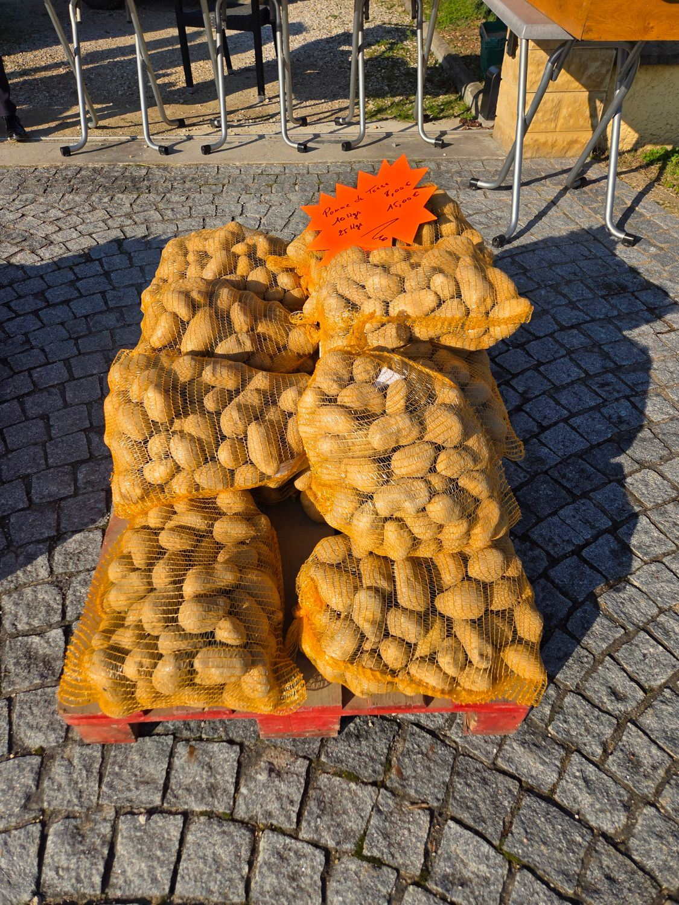

De saisonGros sacs
Pommes de terre Sasha
Une variété polyvalente qui se prête à presque tout : purée, gratin, pommes de terre sautées ou au four. Le grand sac est pratique pour faire sa réserve de l'hiver.
À garder au frais, au sec et à l'obscurité, dans le filet ou un cageot.
- Sac de 10 kg8,00 €
- Sac de 25 kg15,00 €